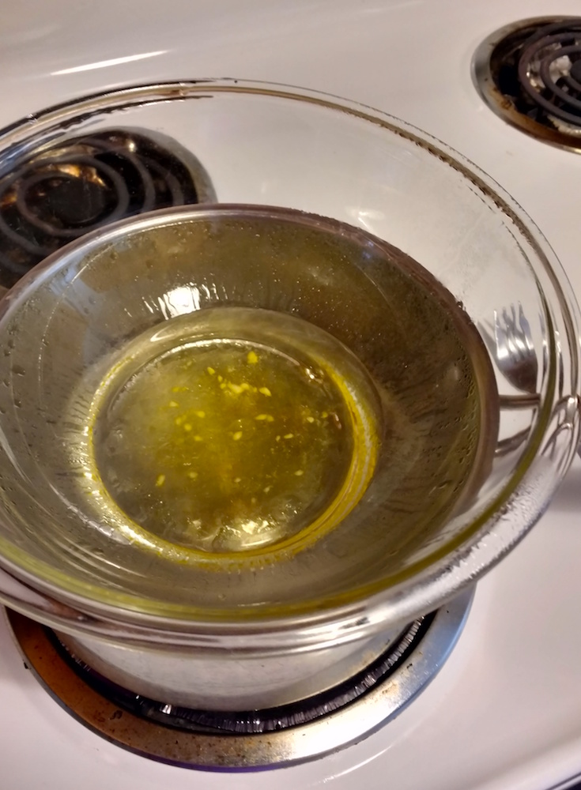
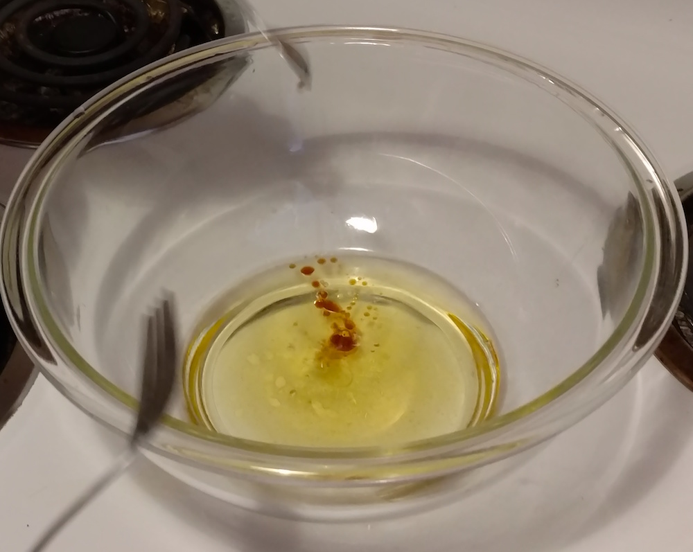

The recipe below is adapted from a vanilla body lotion recipe on Healthy Living How-To. Other helpful resources include a nice list of 5 basic recipes from The Little Pine, as well as a post from Great Cakes Soap Works about troubleshooting your lotion, which talks about how each ingredient affects the end result.
Why make lotion?
Most of the recipes I read included some version of the idea that commercial lotions (or generally body products, or possibly all products), are full of weird ingredients that are bad for your health, and so making your own helps avoid these effects. Some people also suggested that not adding a scent to your homemade lotion is a good way to support the fragrance-free movement. This second reason seems important if, like me, you are skeptical or prioritize differently about your own health, but still feel pretty motivated to not make people around you sick. (As a caveat, everyone's sensitivities vary and this lotion may or may not be okay for a given person.)
And if none of that gets you going, you can make lotion because it's fun, cheap, and customizable. Also, it's cool to know how to do things! It makes the world less mysterious, and makes it easier to figure out even more things.
I got the almond oil and cocoa butter on Amazon, and the rest at Trader Joe's and QFC, but you could go wherever fits your preferences for ethics, price, or convenience.
Steps
Heat the almond oil, cocoa butter, and coconut oil. I use a double boiler made from a pot with about an inch of water in it, with a pyrex bowl set on top. You could use an actual double boiler, an actual pot, a microwave, a bonfire, a blowtorch, etc.
Stir occasionally until the cocoa butter and coconut oil have melted completely.A bit more melted than this
Remove from heat and stir in the vanilla extract.
With a blender, immersion blender, or really strong whisking hand, whisk in the aloe vera, adding gradually until it looks like lotion.Looks soupy and weirdLooks like lotion!
To put the lotion in bottles without making a huge mess, I make a piping bag by cutting a tiny corner off a sandwich bag. Next, scoop the lotion into the corner without the hole, then squeeze it into the bottles through the hole.
That's it! Wipe excess lotion from bowl, blender, etc onto your skin or a paper towel before cleaning with soap and water (otherwise it might clog the drain.) Store in the fridge for a couple months, or at room temperature for a couple weeks.
Substitute shea butter for the cocoa butter, and a couple drops of tea-tree oil (cheap-ish at Trader Joe's) for the vanilla extract. Shea butter doesn't like to be super hot, so pay more attention during step two and definitely skip the blowtorch option. This variation ends up feeling a little lighter. For even less of a scent, skip the tea-tree oil and coconut oil.
Notes on storage
This lotion contains water (in the aloe), and no preservatives, which means fungi and bacteria that are not necessarily good for you can grow in it. Use it up before that happens! You can also make lotion with only oil-based ingredients, which will stand up to parasitic invasion for a bit longer. I made some once, but it is so good at moisturizing that after applying it you become the apocryphal frictionless plane and cannot touch anything for several minutes. A real time suck.